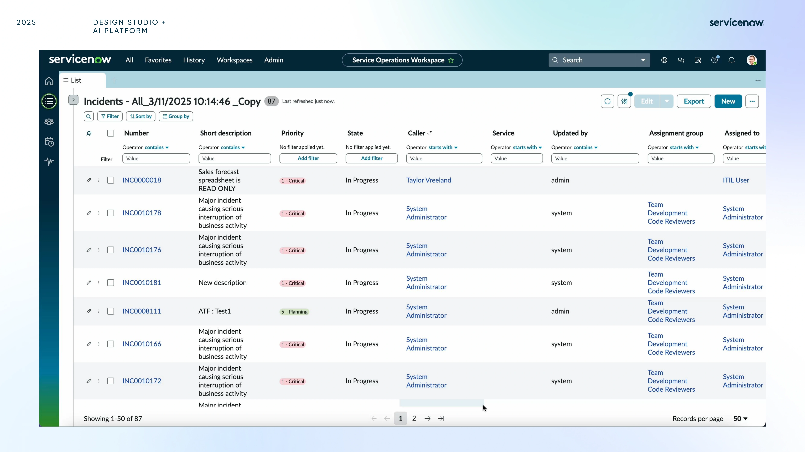
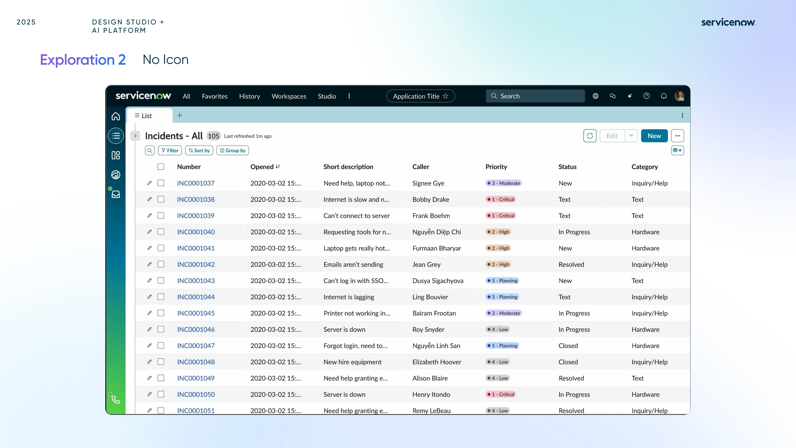
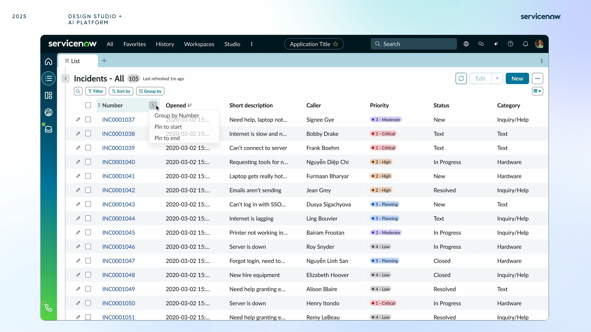
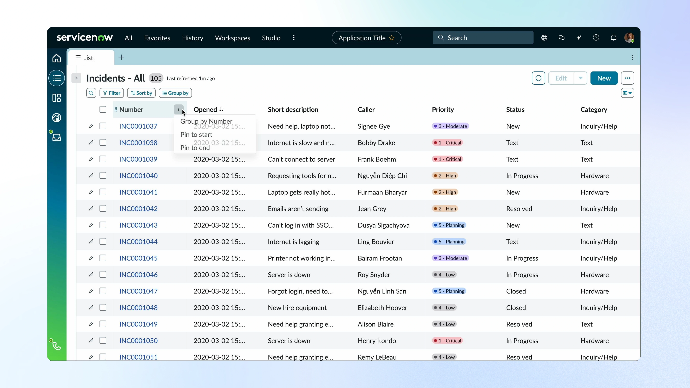
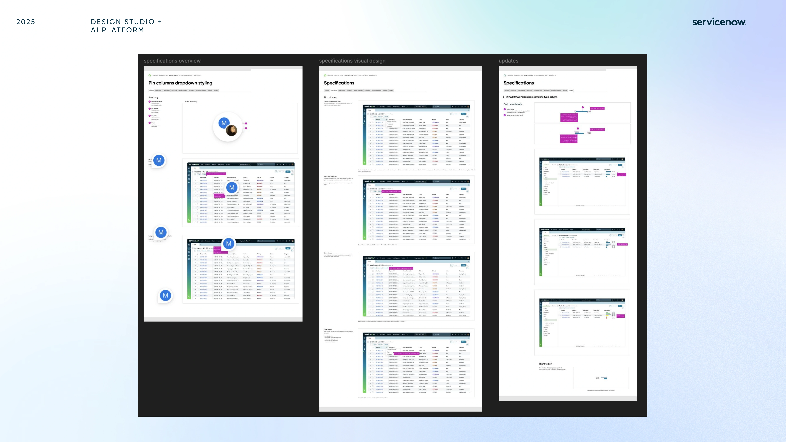

Easy Pin made the pattern more explicit.
This direction leaned into stronger affordances so users could immediately understand what was pinned and how the table would behave while navigating across the list.
Project / 05
A focused ServiceNow exploration on how pinned columns can feel clearer, more predictable, and more useful inside dense list workflows.
I partnered with Michael to explore how column pinning could work more clearly inside ServiceNow list views, where data density and horizontal scrolling make orientation especially important.
The project looked beyond the pinned state itself and focused on the surrounding signals that make the interaction understandable: dividers, shadows on scroll, icon placement, and the balance between discoverability and visual noise.
DISCUSS THIS PROJECT ↗


Directions
Instead of deciding too early, I treated the sprint as a side-by-side evaluation of two different interaction philosophies, then used the mockups to clarify what each one gained and lost.
This direction leaned into stronger affordances so users could immediately understand what was pinned and how the table would behave while navigating across the list.
This alternative tested whether the interface could communicate pinned behavior more elegantly through layout, motion, and dividers rather than additional iconography.
This sprint taught me how much clarity in enterprise UX depends on restraint, especially when designing within existing system patterns and implementation constraints.







Outcome
Even without building the full production feature, the sprint created a clearer language for how pinned behavior should look, when it should announce itself, and how subtle motion can support orientation.
Dividers, shadows, and icon behavior ended up being more important than the pinned state alone because they determined whether the pattern felt predictable.
The sprint made it easier to compare a louder but more teachable pattern against a quieter solution that relied on stronger visual discipline.
This project reminded me that seemingly minor interaction surfaces can meaningfully affect speed, orientation, and trust when users work inside dense data-heavy environments.